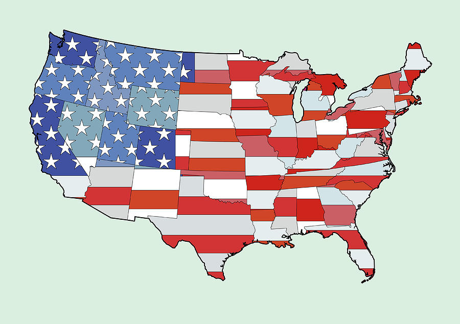
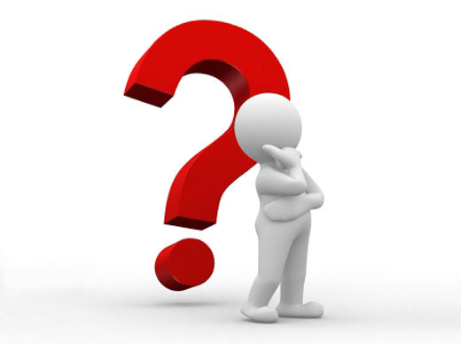

Het Amerikaanse kiesstelsel
De kandidaten
Op 8 november 2016 werd er in Amerika gestemd voor een nieuwe president. De strijd ging dit keer tussen Hilary Clinton en Donald Trump. Clinton had al veel ervaring in de politieke wereld en Trump was een nieuwkomer uit de zakenwereld. Er waren ook andere partijen en kandidaten, maar die hadden zo weinig populariteit dat ze er niet echt toe deden.

Hillary Clinton

Donald Trump
Clinton was volgens de peilingen populairder dan Trump, maar dat moest natuurlijk uit de stemmingen ook nog blijken. Het bleek dat Clinton meer stemmen had gekregen dan Trump, maar Trump was toch de nieuwe president van Amerika. Hoe kan dat? Dit heeft te maken met het kiesstelsel van Amerika.
Geschiedenis van het kiesstelsel
Het kiesstelsel van Amerika is onstaan in de 18de eeuw toen alle stemmen van de verschillende staten op de een of andere manier naar Washington gebracht moesten worden. Omdat het onmogelijk was om het hele volk naar Washington te laten gaan om hun stem uit te brengen, werden er kiesmannen te paard naar Washington gestuurd. Deze kiesmannen konden vervolgens de stem van het volk van de staat waar ze vandaan kwamen vertegenwoordigen. Hierdoor waren het aantal stemmen niet belangrijk voor een kandidaat, maar het aantal kiesmannen. Dit systeem hanteert Amerika nog steeds en dit heet het kiescollege. Het is dus belangrijk voor een kandidaat om de meeste kiesmannen te behalen.

'Winner takes it all'
Het kiesmannensysteem heet ook wel ‘Winner takes it all’. Dit betekent dat het niet uitmaakt of een presidentskanditaat een staat met 51% of 90% van de stemmen wint, hij of zij wint alle kiesmannen die toegewezen zijn aan die staat. Degene die in totaal de meeste kiesmannen wint, wint de verkiezingen. Elke staat krijgt minimaal 3 kiesmannen toegewezen, waarna de staten extra kiesmannen krijgen op basis van het aantal inwoners. Zo heeft Alabama 3 kiesmannen met 1 miljoen inwoners en California 55 met 37 miljoen inwoners. Het aantal kiesmannen per staat worden iedere 10 jaar opnieuw verdeeld. De laatste keer dat de kiesmannen waren verdeeld was in 2010.

Eerlijkheid van het stelsel
Tegenstanders van het kiesmannensysteem vinden dit systeem erg achterhaald, aangezien dit systeem ontstaan is in een tijd dat informatie overbrengen moeilijk was. Daarnaast is het krom dat het dus niet uitmaakt met hoeveel procent van de stemmen een presidentskandidaat een staat wint, alle kiesmannen zijn voor de winnaar. Aan de andere kant zeggen voorstanders van dit systeem dat dit systeem wel de overmacht van de (qua inwonertal) grotere staten tegengaat.
Het kiesmannensysteem zou eerlijker gemaakt kunnen worden door het ‘winner takes it all’ systeem te vervangen door een systeem waar de presidentskanditaat hetzelfde percentage aan kiesmannen krijgt als het percentage stemmen die diegene wint.

De globale uitslag van de verkiezingen in 2016
Clinton heeft 48.1% van alle stemmen gekregen en Trump 46.5%. De overige 4.4% ging naar overige presidentskandidaten. Echter, Trump heeft 56.9% van de kiesmannen gewonnen en Clinton 43.1%. Daarom is Trump dus de nieuwe president van Amerika.